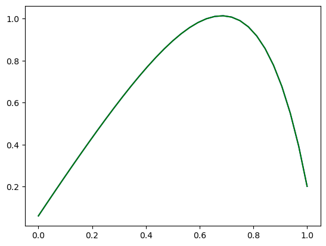

Basic model builder tutorial#
In this tutorial you will learn the basics of contructing a model_builder interface.
In our example, we construct a model_builder for a ROM of the advection diffusion equation.
We will wrap around the adr_1d.py code.
#First, let's import the relavant modules:
import romtools
import os
import numpy as np
from matplotlib import pyplot as plt
from romtools.workflows import sampling
from romtools.workflows import ParameterSpace
import sys
sys.path.append('adr_1d/')
from adr_1d import advectionDiffusionProblem
module 'mpi4py' is not installed
'''
Here, we will interface around a ROM model for solving the 1D advection diffusion problem.
The model code is given in adr_1d/adr_1d_rom.py, and it solves a ROM of the 1d advection diffusion equation:
c u_x - nu * u_xx = 1
To run the code, we require:
A file "params.dat" is required in the run directory. This .dat file contains the parameters c,nu.
A "rom_data.npz" file in an "offline_data_directory" containing the basis, Phi, and reduced operators for the diffusion and reaction term
The code is run as "python adr_1d_rom.py --offline_data_dir = path_to_offline_data_directory
Running the code outputs a solution.npz file with the keys x (grid) and u (solution)
'''
# We will start with defining a ROM class that meets the romtools model API
class adrRom:
def __init__(self,base_dir,offline_directory,):
self.offline_directory_ = offline_directory
self.exec_dir_ = base_dir + '/adr_1d/'
def populate_run_directory(self, run_directory: str, parameter_sample: dict):
# Here, we need to make a params.dat file in the run_directory
c = parameter_sample['c']
nu = parameter_sample['nu']
np.savetxt(run_directory + '/params.dat',np.array([c,nu]))
def run_model(self, run_directory: str, parameter_sample: dict):
os.chdir(run_directory)
os.system('python ' + self.exec_dir_ + '/adr_1d_rom.py -offline_data_dir ' + self.offline_directory_)
return 0
#Now, we can construct the model builder, which should return an adrRom.
#The main logic that we need to add is how to construct the basis given training directories
class AdrRomModelBuilder:
def __init__(self,myFom,adrRomFunctor):
self.myFom_ = myFom
self.adrRomFunctor_ = adrRomFunctor
self.base_dir_ = os.getcwd()
def build_from_training_dirs(self,offline_data_dir,training_dirs):
# The offline_data_dir is a location where we should store any data required for running our ROMs
# (e.g., input yamls, precomputed operators). For workflows leveraging the model builders, romtools will
# create these directories
#Similar, training_dirs is a list of directories where our FOMs have been run and training data is stored.
# The advection diffusion FOM saves a solution.npz file with a key word 'u' containing the solution for each solution
# We will loop through these solutions to construct a snapshot matrix
for (i,training_dir) in enumerate(training_dirs):
u = np.load(training_dir + '/solution.npz')['u']
if i == 0:
snapshots = u[:,None]
else:
snapshots = np.append(snapshots,u[:,None],axis=1)
# We now have our snapshot matrix. We can now assemble our basis. Here we will just do a reduced basis
# Note that ROM tools requires the snapshots to be in tensor form (n_vars, n_dofs , n_snaps)
my_trial_space = romtools.vector_space.DictionaryVectorSpace(snapshots[None])
# We can now assemble our ROM. First, grab the basis for the state variable
basis = my_trial_space.get_basis()[0]
# We need to instatiate a realization of the FOM to get access to the FOM operators
#Let's assemble the ROM operators
Adr = basis.transpose() @ self.myFom_.Ad_ @ basis
Acr = basis.transpose() @ self.myFom_.Ac_ @ basis
fr = basis.transpose() @ self.myFom_.f_
#We will save this to the offline_data_dir
# Note we will also save the FOM operators so that we can evaluate the FOM
# residual we if want
np.savez(offline_data_dir + '/rom_data',Adr=Adr,Acr=Acr,fr=fr,basis=basis,
Ac=self.myFom_.Ac_,Ad=self.myFom_.Ad_,f=self.myFom_.f_)
#Now, we can instatiate the ROM:
myRom = self.adrRomFunctor_(self.base_dir_,offline_data_dir)
return myRom
#That's it! This model builder can be used in, e.g., a greedy workflow
#Let's give this model builder a try.
if __name__ == "__main__":
#First, let's create some training data following the basic_sampling tutorial
from ipynb.fs.full.external_model import adrExternalRomToolsModel
myModel = adrExternalRomToolsModel()
from ipynb.fs.full.parameter_space import BasicParameterSpace
myParameterSpace = BasicParameterSpace()
#The sampling algorithm requires a directory argument of where to put all the generated samples, files, etc.
work_directory = os.getcwd() + '/model_builder_tutorial/'
#Now we can run the sampling algorithm.
sample_directories = sampling.run_sampling(myModel,myParameterSpace,work_directory,number_of_samples=5)
======= Sample 0 ============
Running
Sample complete, run time = 0.14898300170898438
======= Sample 1 ============
Running
Sample complete, run time = 0.09169697761535645
======= Sample 2 ============
Running
Sample complete, run time = 0.08579683303833008
======= Sample 3 ============
Running
Sample complete, run time = 0.09924101829528809
======= Sample 4 ============
Running
Sample complete, run time = 0.08455801010131836
#Great! Now, let's create our modelBuilder
#To build an intrusive ROM, we need access to the operators of the FOM
myIntrusiveFom = advectionDiffusionProblem(nx=33)
myModelBuilder = AdrRomModelBuilder(myIntrusiveFom,adrRom)
#Let's use this to build a ROM model using the data we just generated in our FOM sampling
#We will create a directory for our offline data (e.g., rom bases, etc.)
offline_data_dir = os.getcwd() + '/model_builder_example_offline_data'
if os.path.isdir(offline_data_dir):
pass
else:
os.mkdir(offline_data_dir)
myRomModel = myModelBuilder.build_from_training_dirs(offline_data_dir,sample_directories)
# Let's test running our model and comparing it to the FOM!
parameter_sample = {}
parameter_sample['c'] = 0.5
parameter_sample['nu'] = 1e-1
run_directory = os.getcwd()
#Let's run the ROM
myRomModel.populate_run_directory(run_directory,parameter_sample)
myRomModel.run_model(run_directory,parameter_sample)
rom_solution = np.load(run_directory + '/solution.npz')
plt.plot(rom_solution['x'],rom_solution['u'],color='blue',label='ROM')
u_rom = rom_solution['u']
#Now let's run the FOM
myModel.populate_run_directory(run_directory,parameter_sample)
myModel.run_model(run_directory,parameter_sample)
fom_solution = np.load(run_directory + '/solution.npz')
u_fom = fom_solution['u']
print('ROM-FOM error = ' , np.linalg.norm(u_rom - u_fom)/np.linalg.norm(u_fom))
plt.plot(fom_solution['x'],fom_solution['u'],color='green',label='FOM')
plt.show()
ROM-FOM error = 4.2469193422409324e-05
